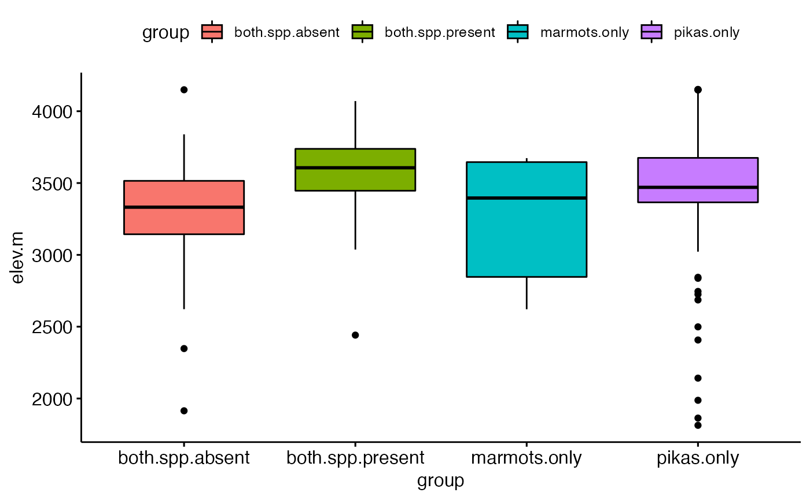
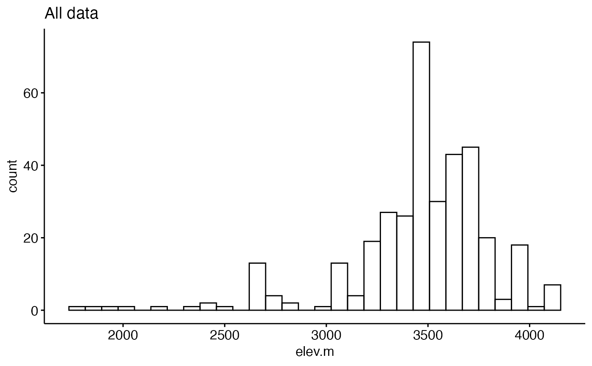
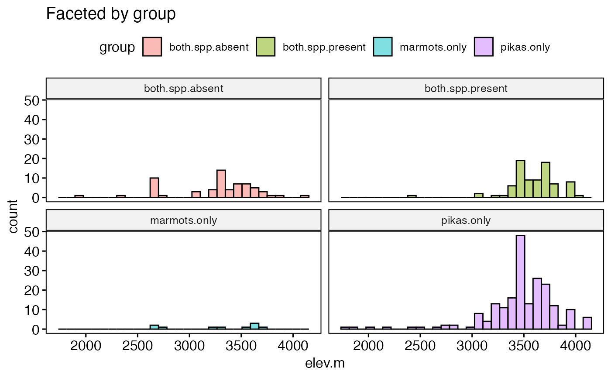
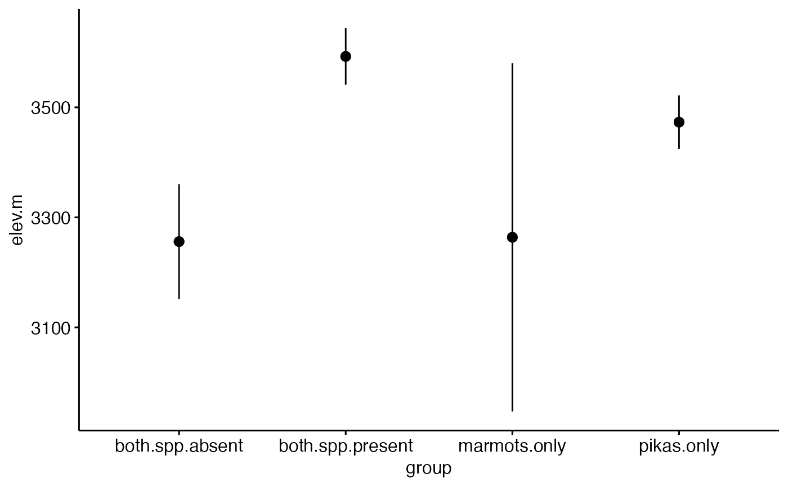

pikas.RdOriginal data had lat and long for most sites. Elevations estimate using the elevatr package (https://cran.r-project.org/web/packages/elevatr/vignettes/introduction_to_elevatr.html)
pikas
A data frame
latitude of survey site
longitude of survey site
Are pikas present or absent from the site
Are marmots present or absent
Description of area of talus at site
Elevation of site
Designates whether no focal species seen, pikas only, marmots only, or both
Front Range Pika Project. http://www.pikapartners.org/cwis438/websites/FRPP/Home.php?WebSiteID=18
## Load packages library(ggplot2) library(ggpubr) ## Explore data graphically ### Plot boxplots ggboxplot(data = pikas, y = "elev.m", x = "group", fill = "group")#> Warning: Using `bins = 30` by default. Pick better value with the argument `bins`.gghistogram(data = pikas, x = "elev.m", facet.by = "group", fill = "group", title = "Faceted by group")#> Warning: Using `bins = 30` by default. Pick better value with the argument `bins`.## Plot means with 95% confidence intervals ggerrorplot(pikas, x = "group", y = "elev.m", desc_stat = "mean_ci", add = "mean")#> Warning: `fun.y` is deprecated. Use `fun` instead.#> Warning: `fun.ymin` is deprecated. Use `fun.min` instead.#> Warning: `fun.ymax` is deprecated. Use `fun.max` instead.## 1-way ANOVA ### null model model.null <- lm(elev.m ~ 1, data = pikas) ### model of interest model.alt <- lm(elev.m ~ group, data = pikas) ### compare models anova(model.null, model.alt)#> Analysis of Variance Table #> #> Model 1: elev.m ~ 1 #> Model 2: elev.m ~ group #> Res.Df RSS Df Sum of Sq F Pr(>F) #> 1 358 46652447 #> 2 355 42172546 3 4479901 12.57 7.903e-08 *** #> --- #> Signif. codes: 0 ‘***’ 0.001 ‘**’ 0.01 ‘*’ 0.05 ‘.’ 0.1 ‘ ’ 1## Pairwise comparisons after 1-way ANOVA ### no corrections for multiple comparisons pairwise.t.test(x = pikas$elev.m, g = pikas$group, p.adjust.method = "none")#> #> Pairwise comparisons using t tests with pooled SD #> #> data: pikas$elev.m and pikas$group #> #> both.spp.absent both.spp.present marmots.only #> both.spp.present 1.2e-08 - - #> marmots.only 0.9469 0.0047 - #> pikas.only 1.6e-05 0.0084 0.0616 #> #> P value adjustment method: none### Bonferonni correction pairwise.t.test(x = pikas$elev.m, g = pikas$group, p.adjust.method = "bonferroni")#> #> Pairwise comparisons using t tests with pooled SD #> #> data: pikas$elev.m and pikas$group #> #> both.spp.absent both.spp.present marmots.only #> both.spp.present 7.5e-08 - - #> marmots.only 1.000 0.028 - #> pikas.only 9.8e-05 0.050 0.370 #> #> P value adjustment method: bonferroni## Tukey test ### re-fit model with aov() model.alt.aov <- aov(elev.m ~ group, data = pikas) ### TukeyHSD() on model from aov() TukeyHSD(model.alt.aov)#> Tukey multiple comparisons of means #> 95% family-wise confidence level #> #> Fit: aov(formula = elev.m ~ group, data = pikas) #> #> $group #> diff lwr upr p adj #> both.spp.present-both.spp.absent 336.628875 187.57748 485.680266 0.0000001 #> marmots.only-both.spp.absent 7.815778 -295.02921 310.660764 0.9998938 #> pikas.only-both.spp.absent 217.136993 88.90408 345.369906 0.0000956 #> marmots.only-both.spp.present -328.813098 -626.81307 -30.813127 0.0239624 #> pikas.only-both.spp.present -119.491882 -235.82148 -3.162281 0.0415090 #> pikas.only-marmots.only 209.321216 -78.83038 497.472816 0.2406440 #>